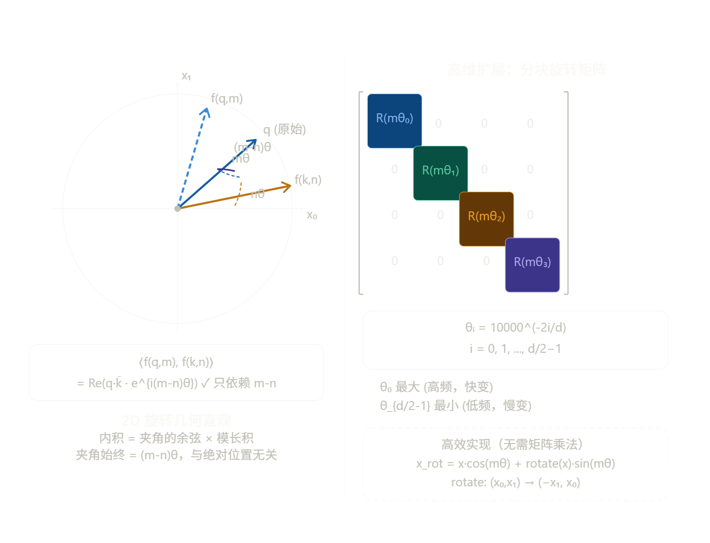
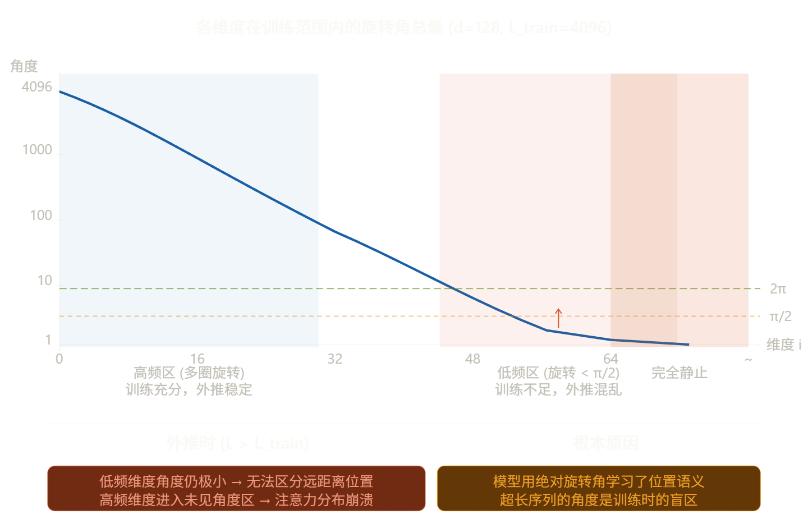

位置编码
Sinusoidal
Sinusoidal 位置编码是 Transformer 论文《Attention is All You Need》中提出的经典方案。理解它的关键在于：如何用确定性的数学函数，在不引入额外参数的情况下，让模型感知到序列的顺序和距离。
核心公式推导
对于位置索引 \(pos\) 和维度索引 \(i\)（\(i \in [0, d_{model}/2)\)），其编码向量 \(PE\) 的每个分量定义如下：
公式拆解：
- 波长： 分母 \(10000^{2i/d_{model}}\) 决定了正弦波的周期。随着维度 \(i\) 的增加，分母变大，频率降低，波长变长。
- 几何级数： 波长构成一个从 \(2\pi\) 到 \(10000 \cdot 2\pi\) 的几何级数，这意味着低维度捕捉局部细微变化，高维度捕捉全局长程关系。
为什么相邻位置更相似？
这是一个直观但深刻的问题。由于 \(\sin\) 和 \(\cos\) 是连续函数，当 \(pos\) 发生微小变化时，对应的函数值也只会发生微小变化。
- 欧几里得距离： 如果两个位置 \(pos_1\) 和 \(pos_2\) 很接近，那么在所有维度上，\(PE\) 的值都会非常接近。
- L-2 Norm 的稳定性： 在 \(d_{model}\) 维度足够高的情况下，这种连续性保证了相邻位置向量在空间中的“欧氏距离”较短。
- 点积感知： Transformer 依赖点积（Dot Product）计算注意力。相邻位置的向量点积通常较大，这符合自然语言的规律：邻近的词往往具有更强的语义关联。
相对位置的线性表示
这是 Sinusoidal 方案最精妙的地方。作者希望模型能够学习到相对位置，即 \(pos\) 和 \(pos+k\) 之间的关系。
基于三角函数公式：
对于任何固定的偏移量 \(k\)，位置 \(pos+k\) 的编码可以表示为位置 \(pos\) 的线性变换：
其中 \(\Delta_i\) 是与 \(k\) 相关的常数。
这意味着： 模型只需要通过一套线性权重，就能从 \(pos\) 的信息中推导出 \(pos+k\) 的信息，从而获得感知“距离”的能力。
局限性
虽然 Sinusoidal 理论上可以处理无限长的序列，但实际上它存在外推性（Extrapolation）瓶颈：
- 高频消失： 对于极长的序列（例如 \(pos > 10000\)），公式中的分母变得非常大，导致几乎所有维度的 \(\sin/\cos\) 都处于非常缓慢变化的区间（接近线性）。
- 分辨率损失： 当 \(pos\) 远超训练时的最大长度时，模型在注意力机制中无法区分极其遥远的两个位置，因为它们的编码在向量空间中变得过于密集，甚至出现严重的数值重叠。
- 注意力稀疏性失效： 随着距离增加，点积本应平滑衰减，但在超长序列下，这种衰减规律会因为超出函数周期而失效，导致模型产生错乱。
Sinusoidal 方案虽然在目前的 LLM 中（如 Llama）被 RoPE 取代，但它留下了两个极其重要的遗产：
维度与频率的对应关系： 启发了后来的多尺度位置表示。
旋转思想的萌芽： RoPE 本质上就是把 Sinusoidal 的这种线性变换直接融合进了 Attention 的点积运算中。
可学习位置编码
在 Sinusoidal 方案提出后，NLP 领域经历了一段探索期，BERT（Bidirectional Encoder Representations from Transformers）选择了另一条道路：可学习位置编码（Learned Positional Encoding）。
这种方法的核心思想非常直接：既然模型要学习词的含义（Word Embedding），为什么不让模型自己学习每个位置的含义呢？
位置即 Embedding
可学习位置编码不再使用确定性的三角函数计算，而是将位置（Position Index）本身视为一个需要被 Embedding 的特征。
具体步骤：
- 预定义最大长度： 开发者必须首先确定模型能处理的最大序列长度（Max Sequence Length），例如 BERT 是 512，GPT-2 是 1024。
- 创建查找表： 在模型中初始化一个巨大的二维矩阵 \(\mathbf{PE} \in \mathbb{R}^{Max\_Len \times d_{model}}\)。这个矩阵的每一行对应一个特定的位置。
- 查找与求和： 当输入一个句子（例如 10 个词）时，模型会：
- 查出这 10 个词的 Word Embeddings：\(\mathbf{E} = [e_0, e_1, ..., e_9]\)。
- 查出对应的前 10 个位置编码：\(\mathbf{P} = [p_0, p_1, ..., p_9]\)。
- 将它们直接相加，作为 Transformer 的最终输入：\(\mathbf{X} = \mathbf{E} + \mathbf{P} = [e_0+p_0, e_1+p_1, ..., e_9+p_9]\)。
关键点：
- 这个位置矩阵 \(\mathbf{PE}\) 中的所有数值最初都是随机初始化的（例如使用服从高斯分布的小随机数）。
- 在模型训练（Pre-training）过程中，\(\mathbf{PE}\) 就像模型的权重一样，通过反向传播算法不断更新。
- 训练完成后，这些位置向量就被“固定”下来。位置 0 的向量会形成某种特定的激活模式，用来表达“这是句子的开始”，位置 5 会形成另一种模式。
BERT 方案的优缺点
BERT 选择这种方案，既有其合理性，也留下了隐患。
优点：
- 实现极其简单： 它的逻辑与 Word Embedding 完全一致，不需要设计复杂的数学公式。
- 高度灵活： 模型可以完全根据数据的分布，自由地调整每个位置的向量表示，理论上能够学到最适合当前任务的位置关系。
缺点：
- 绝对位置感知，缺乏相对位置感： 可学习位置编码本质上学到的是“我在哪里”（例如：“我是第 10 个词”），而不是“我和你离多远”。虽然模型可以通过多层 Self-Attention 学习到距离，但位置向量本身没有显式的距离约束。
- 最大的痛点：外推性为零：
- 如果在预训练时，最大的位置编码是 511，那么在推理时，模型遇到第 513 个词，完全没有任何对应的向量可以提供。
- 你不能通过线性插值或外推来虚构一个向量，因为这些向量是训练出来的特定模式，虚构的向量在语义上对模型来说毫无意义。
- 这就意味着：模型的最大推理长度被锁死在预训练时的最大长度上，没有任何扩展余地。
RoPE
目标
标准 Attention 的内积 \(\langle q_m, k_n \rangle\) 完全不知道位置信息。我们希望设计一个函数 \(f\)，满足：
右边只依赖相对距离 \(m-n\)，与绝对位置 \(m, n\) 无关。这不是工程上的权宜之计，而是一个严格的数学约束，RoPE 的全部推导都从这里出发。
2D 情形的完整推导
先在二维空间里找满足上述约束的 \(f\)。把 2D 向量写成复数：\(q = q_0 + iq_1\)，两个复数的内积等于实部的点积，即：
于是我们把问题转化为：找复数函数 \(f(x, m)\)，使得：
猜测形式：令 \(f(x, m) = x \cdot e^{im\theta}\)，即把向量旋转 \(m\theta\) 角。验证：
取实部：
右边只依赖 \(m-n\)，✓ 约束满足。
写回矩阵形式，复数乘 \(e^{im\theta}\) 等价于左乘旋转矩阵：

高维扩展与频率选择
把 \(d\) 维向量按相邻两维分成 \(d/2\) 组，每组独立旋转，整体旋转矩阵是块对角结构：
频率的设计沿用 Sinusoidal 的思路：
频率从 \(\theta_0 = 1\)（最高频）指数衰减到 \(\theta_{d/2-1} = 10000^{-1} \approx 10^{-4}\)（最低频）。这个设计保证了每个维度对的旋转速率覆盖不同的距离尺度——高频维度区分近距离，低频维度区分远距离，与 Sinusoidal 的多尺度时钟思路一脉相承，但现在嵌入在旋转操作里。
高效实现不需要真的构造并乘以 \(d\times d\) 的矩阵。利用旋转公式展开：
等价写法：先把奇数位取反得到 \(x' = (-x_1, x_0, -x_3, x_2, \ldots)\)，然后：
只需两次逐元素乘法，复杂度 \(O(d)\)，非常高效。
三个数学性质
性质 1：内积只依赖相对位置
将 Attention 的 QK 内积展开，对每个子空间 \(i\) 单独计算：
对第 \(i\) 个子空间，利用复数旋转：
整个内积变成：
右边只含 \(m-n\)，相对位置性质得证。
性质 2：长程衰减（远距离注意力自然降低）
固定 \(q, k\)，考察内积随相对距离 \(r = m-n\) 的变化。每一项 \(\text{Re}(q_{(i)}\bar{k}*{(i)} \cdot e^{ir\theta_i})\) 是一个振幅为 \(|q*{(i)}||k_{(i)}|\)、频率为 \(\theta_i\) 的余弦函数。把所有子空间叠加：
其中 \(\phi_i = \angle(q_{(i)}) - \angle(k_{(i)})\) 是各子空间的相位差。当 \(r\) 增大时，不同频率的余弦项相位各异地振荡，求和趋于相消，期望值趋近于零。这不是单调衰减，而是统计意义上的衰减——相距越远，随机 \(q,k\) 的平均注意力越低，符合语言模型的先验。
性质 3：旋转不变的范数
旋转是等距变换，\(|f(x, m)| = |x|\)，向量范数不随位置变化。这保证了引入 RoPE 不会改变 Attention 的数值尺度，训练稳定。
外推为什么会失败？

核心矛盾在于：RoPE 的数学保证是相对位置，但训练过程中模型通过梯度下降实际学习的是特定角度范围下的注意力模式。位置 512 和位置 1024 的差异，是通过它们旋转角之差来表达的——如果从未见过更大的角度，模型就没有能力处理。
YaRN：从 NTK 理论出发的修复
位置插值（PI）的问题
最朴素的想法是线性压缩：把位置 \(m\) 替换为 \(m' = m \cdot L_{\text{train}} / L_{\text{target}}\)，使所有位置的旋转角都落回训练范围。但这等比压缩了所有频率，包括高频维度——原来用于区分相邻 token 的高频旋转被"压平"了，近距离分辨率严重下降。
NTK-aware 插值
YaRN 的理论基础来自神经正切核（NTK）的视角：把位置编码看作一个连续信号，旋转角 \(m\theta_i\) 是位置 \(m\) 在第 \(i\) 个频率分量上的"采样"。为了支持更长上下文 \(s = L_{\text{target}} / L_{\text{train}}\) 倍，需要把基频做整体缩放：
这相当于把整个频率谱向低频方向平移，使得原来低频维度也能在新长度下有足够的旋转区分度，同时高频维度损失相对较小。
YaRN 的分段策略
YaRN 更进一步，按每个维度的波长 \(\lambda_i = 2\pi / \theta_i\) 与上下文长度的关系，分三段处理：
YaRN 还引入了一个注意力温度系数 \(\sqrt{t}\)：因为低频维度被缩放后旋转变慢，QK 内积的方差会下降，softmax 分布趋于平坦。用 \(\sqrt{t}\) 对注意力分数整体缩放，补偿这一能量变化，实测效果显著。
LongRoPE：每层独立搜索缩放因子
LongRoPE 的出发点是：YaRN 的分段阈值 \(\alpha, \beta\) 是手动设定的全局超参，但不同 Transformer 层对位置信息的依赖模式是不同的——浅层更关注局部，深层更关注全局。
LongRoPE 用进化算法（EA）对每个注意力层、每个频率维度单独搜索最优缩放因子 \(\lambda_i^{(l)}\)，使得困惑度最小，然后在极少量微调（甚至不微调）下就能将上下文扩展到 2M token。关键发现是：
- 不同层确实需要不同的缩放策略，统一的 YaRN 参数是次优的
- 通过两阶段搜索（先扩展到目标长度，再恢复短上下文性能），可以同时保留短文本和长文本的能力
- 这一思路在 Phi-3 等模型中得到验证
为什么只旋转 Q 和 K，不旋转 V？ 因为位置关系体现在注意力权重里（由 QK 内积决定），V 只是被加权求和的内容，旋转它没有意义。
为什么基底选 10000，不是其他数？ 这是一个工程选择——10000 使得最低频维度的波长约为 \(2\pi \times 10000 \approx 63000\) 个位置，远超常见训练长度，保证低频维度在训练范围内变化平滑。更大的基底意味着更长的波长，YaRN 的 NTK 方法本质上就是调大这个基底。
RoPE 和 Sinusoidal 的本质区别？ Sinusoidal 把位置信息加到向量上（绝对位置，加法），而 RoPE 把位置信息乘进旋转矩阵（通过内积展现相对位置，乘法）。加法残留了绝对位置信息，导致外推时分布偏移；旋转则是等距变换，只影响角度关系。
实际代码中 cos_cached / sin_cached 是什么？ 模型初始化时预计算好所有位置的 \(\cos(m\theta_i)\) 和 \(\sin(m\theta_i)\)，存成形状为 (max_len, d/2) 的缓存矩阵，前向传播时直接查表，不需要每次重新计算三角函数。